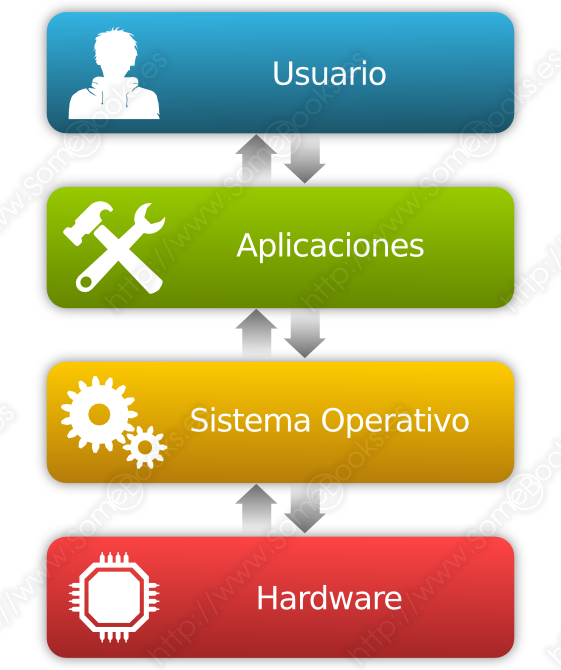
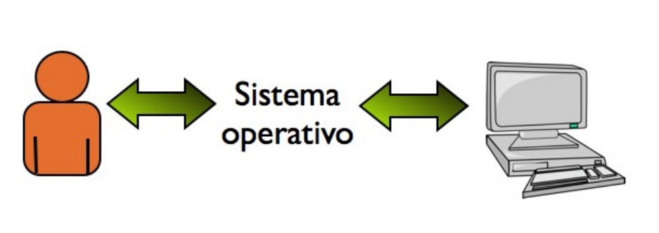
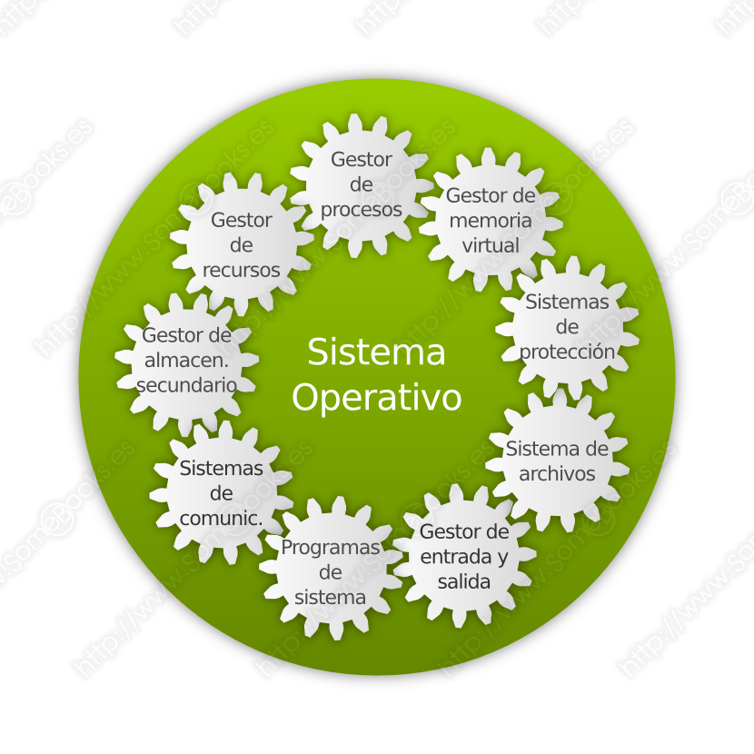
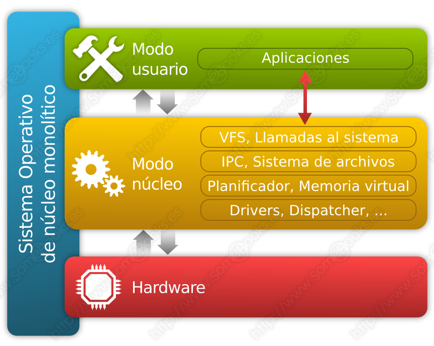
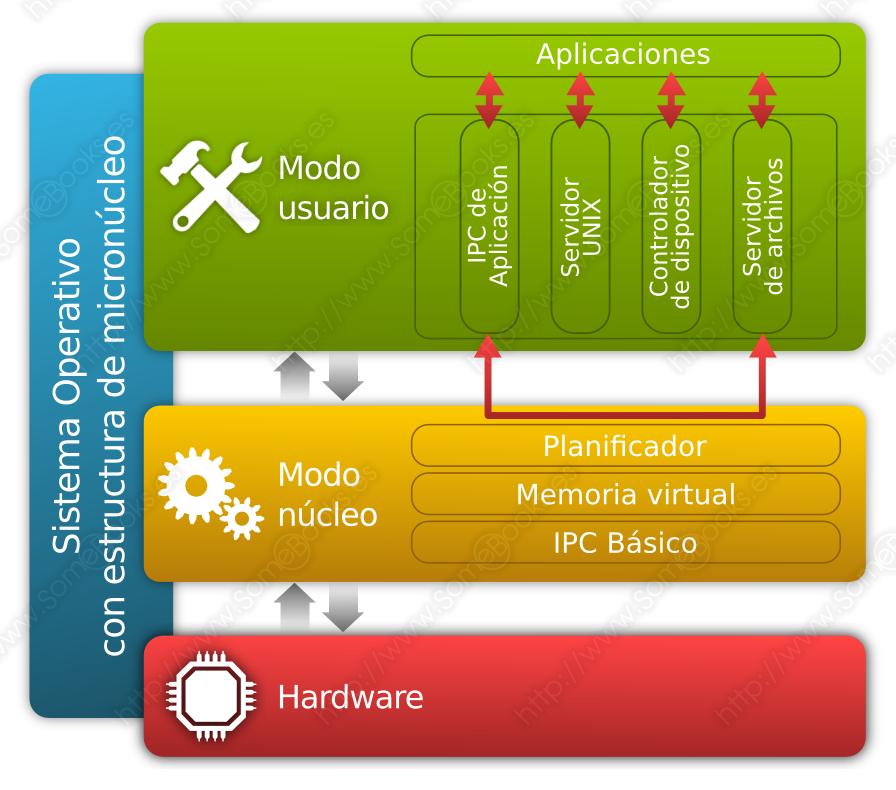
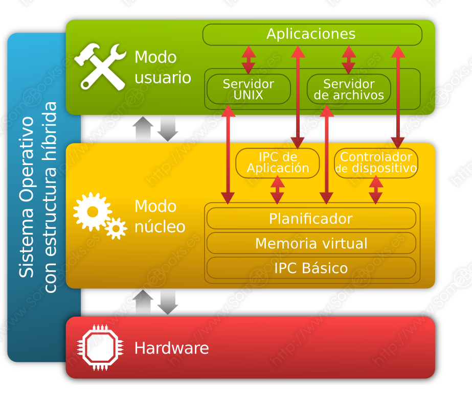

2. Sistemes Operatius
2.1. Sistema Operatiu i aplicacions
La RAE defineix el programari com el conjunt de programes, instruccions i regles informàtiques per a executar certes tasques en un ordinador". Per tant, el programari és l'encarregat de dirigir l'ordinador en la tasca d'obtenir resultats particulars.
En línies generals, podem dir que existeixen dos tipus de programari:
- El programari de sistema.
- El programari d'aplicació.
Parlem d'ambdós tipus de forma més detallada.
2.1.1. Programari de sistema
El programari de sistema, també conegut com a programari de base, és el conjunt de programari que es fa càrrec de gestionar els recursos hardware del sistema informàtic, separant tant els usuaris finals com els desenvolupadors de programari de les seues característiques específiques.
Per a aconseguir-ho, incorpora una interfície adequada per a l'usuari final i un conjunt de funcions i procediments que poden ser invocats pels programes d'aplicació i que rep el nom d'API (de l'anglés Application Programming Interface).

Encara que l'element fonamental del programari de sistema siga el sistema operatiu, també s'inclouen en aquest nivell els controladors de dispositiu, les eines de diagnòstic i altres utilitats. Entre els sistemes operatius més utilitzats es troben:
- Microsoft Windows.
- GNU/Linux.
- Apple macOS.
2.1.2. Programari d'aplicació
Està format per els programes que permeten als usuaris realitzar tasques concretes, que poden ser generals (processadors de text, fulls de càlcul, navegadors d'internet, etc.) o específics per a activitats particulars que puguen recolzar-se en un sistema informàtic (comptabilitat, disseny assistit per ordinador, videojocs, etc.).
És molt freqüent que just després d'instal·lar un sistema operatiu trobem instal·lats alguns programes (calculadora, navegador, editor de textos, etc.). Encara que aquests programes formin part del programari d'aplicació, és molt freqüent que els usuaris finals pensen que formen part del sistema operatiu. No obstant això, només es tracta d'un complement que incorporen els proveïdors del sistema operatiu per a facilitar certes tasques comunes.
2.2. Sistemes Operatius Actuals
Ja hem esmentat alguns dels sistemes operatius més utilitzats en ordinadors: Microsoft Windows, GNU/Linux i Apple macOS. No obstant això, només ens havíem referit a les solucions d'escriptori, és a dir, als sistemes operatius dissenyats per a l'ús diari per part d'un usuari o un grup reduït d'ells. No obstant això, existeixen sistemes operatius per a ordinadors la tasca dels quals consisteix en oferir serveis a través d'una xarxa a altres ordinadors (i als seus usuaris). En aquests casos, els sistemes d'escriptori actuen com a clients dels sistemes servidors.
Nota
GNU significa: "GNU's Not Unix"
A més, existeixen altres sistemes operatius que, encara que no estan dissenyats per a ordinadors, també són molt comuns en l'actualitat, són els destinats a telèfons intel·ligents (smartphones). Entre ells, podem mencionar els següents: Android, iOS, Windows Phone i, en menor mesura, Ubuntu Phone, Firefox OS, BlackBerry OS i Symbian.
També hi ha altres exemples de sistemes operatius que, en el moment d'escriure aquestes línies, mostren certa rellevància. Ens referim als següents:
- Chrome OS: Un sistema operatiu basat en GNU/Linux, desenvolupat per Google i orientat a Internet, on la principal eina és el navegador.
- webOS: Un sistema operatiu basat en GNU/Linux, desenvolupat per LG per a incloure'l en els seus televisors.
- Tizen: Un sistema operatiu basat en GNU/Linux, recolzat per Linux Mobile Foundation (LiMo), Linux Foundation i Samsung, per a ser instal·lat en telèfons intel·ligents, tauletes, etc.
2.3. Interficie dels S.O.
La interfície dels sistemes operatius és la que ens permet la comunicació entre els usuaris i el maquinari de la màquina.

Els sistemes operatius tenen dos tipus d'interfície:
- Interfície de tipus text: Totes les ordres que l'usuari introduïsca i les respostes que el SO dona se introduiran o visualitzaran mitjançant cadenes de caràcters.
- Interfície de tipus gràfic: El mitjà de comunicació entre l'usuari i l'ordinador és gràfic, i és necessari l'ús del ratolí.
2.4. S.O. Lliures i propietaris
Davant de l'àmplia gamma de sistemes operatius que trobem en l'actualitat, ens veiem obligats a acotar l'àmbit al qual ens dedicarem en aquest curs, amb l'objectiu de ser el més concrets possible. En aquest sentit, ens decantem per les versions d'escriptori de dos entorns principals:
- El sistema operatiu Microsoft Windows, com a paradigma dels sistemes amb llicència de codi tancat.
- El sistema operatiu Ubuntu, que potser és el que té una major repercussió entre els que ofereixen llicències de codi obert.
2.5. Programari de base d'un S.O.
Si no existira el programari de sistema també anomenat programari de base, cada programador que, per exemple, estiguera escrivint un programa que oferira dades impresses, hauria d'escriure les instruccions necessàries per a controlar de forma precisa la impressora.
Si, a més, l'objectiu fóra que el programa funcionara en ordinadors amb diferents models d'impressora, hauria de repetir la feina per a cada model concret. Això faria que la feina a la qual s'enfrontaria fóra immensa.
El programari de sistema fa que els programes d'aplicacions puguen manejar les impressores d'una forma genèrica, amb ordres bàsiques i senzilles, i el que és més important, generals per a qualsevol model d'impressora.
A més, aquesta idea s'aplica també a la resta dels dispositius: discs durs, dispositius d'emmagatzematge USB, monitors, ratolins, etc. Totes les ordres d'aquest tipus són les que formen l'API. Encara que l'element fonamental del programari de sistema siga el sistema operatiu, també s'inclouen en aquest nivell els controladors de dispositiu, les eines de diagnòstic i altres utilitats.
2.6. Elements i estructura del S.O.
Podríem definir el concepte de Sistema Operatiu com un programa, o un conjunt de programes que col·laboren entre ells per a administrar els elements físics d'un sistema informàtic, optimitzant el seu ús i oferint determinats serveis als programes d'aplicació.
Un sistema operatiu es farà càrrec d'aspectes com:
- L'ús, compartit i ordenat, dels recursos entre diferents usuaris.
- La protecció de recursos, per evitar que un usuari accedisca a recursos als quals no està autoritzat.
Perquè aquesta protecció siga possible, el sistema informàtic ha de ser capaç d'executar instruccions en dos nivells diferents:
- En mode usuari: És el mode menys privilegiat de funcionament del sistema. En aquest mode no es permet l'accés directe al maquinari.
- En mode nucli (també anomenat mode kernel) o mode supervisor: En ell, les instruccions s'executen en un mode privilegiat, tenint accés directe a tota la memòria (inclosos els espais d'adreces de tots els processos que estiguen executant-se). En aquest mode només s'executen algunes parts del sistema operatiu.
2.7. Classificació dels S.O.
Per nombre d'usuaris:
- Monousuari: Només un usuari en l'ordinador en un moment donat.
- Multiusuari: Varios usuaris en l'ordinador.
Per nombre de processos:
- Monotasca: Només processa una tasca en un instant donat.
- Multitasca: Varies tasques simultàniament
2.8. Elements d'un S.O.
Com podem imaginar, un sistema operatiu és un programa molt complex que ha d'estar molt ben organitzat i estructurat internament per a dur a terme la seua feina d'una forma molt eficient. En aquest sentit, els sistemes operatius es subdividixen en diferents components que estan especialitzats en aspectes molt concrets del mateix.
Els elements que constitueixen la majoria dels sistemes operatius són els següents:
- Gestor de processos.
- Gestor de memòria virtual.
- Gestor d'emmagatzematge secundari.
- Gestor d'entrada i eixida.
- Sistema d'arxius.
- Sistemes de protecció.
- Sistema de comunicacions.
- Programes de sistema.
- Gestor de recursos.

2.9 Estructura d'un S.O.
Podem plantejar-nos la manera en què aquests elements s'organitzen dins del sistema operatiu per a dur a terme el seu objectiu. També serà important per al disseny del sistema establir quins components del mateix s'executen en mode nucli i quins en mode usuari.
En aquest sentit, els plantejaments que s'apliquen en els sistemes operatius més coneguts són els següents:
- Monolític.
- Micronucli.
- Nucli híbrid
2.9.1. Monolític

2.9.2. Micronucli

2.9.3. Nucli híbrid

2.10 Funcions del S.O.
La estructura d'un sistema operatiu es divideix en diferents mòduls que solen estar especialitzats en funcions concretes. En alguns casos existeix una relació directa entre un determinat mòdul i una funció concreta del sistema operatiu. No obstant això, en altres casos, són diversos els mòduls que cooperen d'alguna manera per a dur a terme una funció específica.
En qualsevol cas, aquestes són les principals funcions que duu a terme qualsevol sistema operatiu:
- Gestió de processos.
- Gestió de memòria.
- Gestió d'arxius.
- Gestió d'Entrada/Eixida (E/S).
BIBLIOGRAFIA
Enllaç a la font original (Capítols 3 i 4)